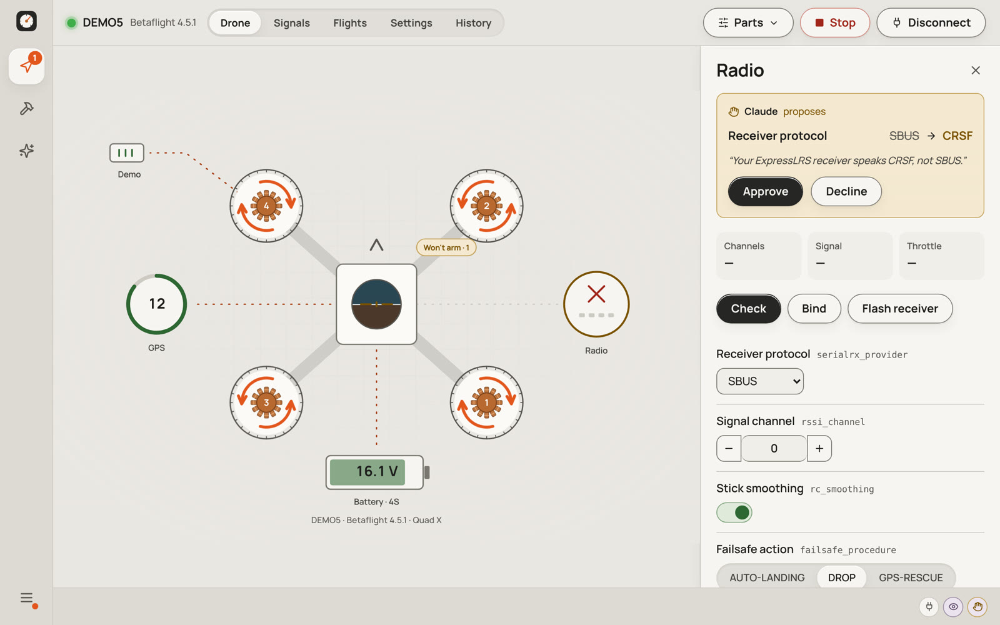
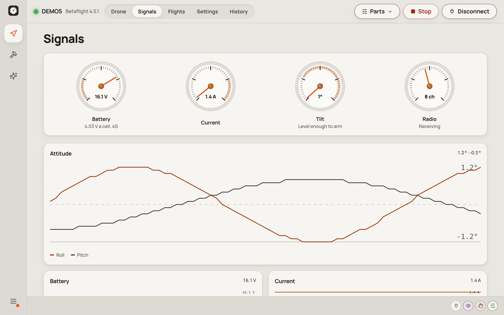
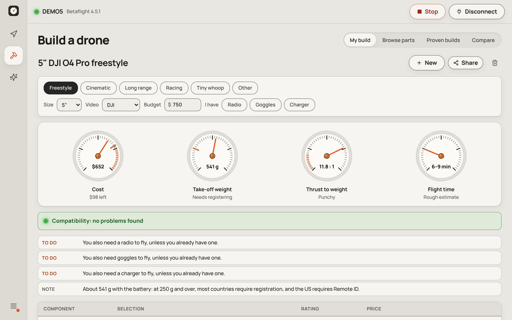

Plug in
Connect your flight controller over USB in Chrome or Edge. Nothing to install. No drone? Open the demo.
Plug in your FPV drone. Ask Claude or ChatGPT what’s wrong. Approve the fix. It runs on the subscription you already have.
Free and open source · No sign-up · No install · No API key
Your assistant does the thinking. Lucidity does the hardware, and you make every call.
Connect your flight controller over USB in Chrome or Edge. Nothing to install. No drone? Open the demo.
Add Lucidity to Claude, ChatGPT, Claude Code, Cursor or VS Code as a connector, with one link. Then say “my quad won’t arm”.
The fix appears on the part it affects. Nothing changes until you click, and every change is read back to confirm it.
Won’t arm, motors spinning the wrong way, no receiver signal, a shaky tune, GPS that never gets a fix. Your assistant reads every setting, runs the right checks and explains the cause in plain words.
Why won’t my quad arm? Every Betaflight arming flag, explained →

Choose what you want to fly and your budget. Pick every part, or start from a proven build. Lucidity checks that the frame, motors, ESC, props, battery, receiver and video system work together, and shows the cost, take-off weight, thrust-to-weight and flight time as you go.
Every part links to the stores that sell it. Share a build with one link.

| Betaflight · INAV | ArduPilot · PX4 | |
|---|---|---|
| Live readings | Attitude, battery, radio, motors, GPS, sensors, arming blocks | Plus vibration, EKF and status messages |
| Settings | Every value, with ranges and readback | Every parameter, with readback |
| Tests | Health checks, motor spin, calibration | Plus level, gyro, barometer and arming checks |
| ESCs | BLHeli_S, Bluejay and AM32 | Through passthrough |
| Firmware | Flight controller, ExpressLRS receivers | Flight controller |
| Flight logs | Blackbox download and analysis | Download and analysis |
No. Lucidity has no AI of its own. You add it to Claude or ChatGPT as a connector, and it runs on the subscription you already have, with your history and preferences intact.
Anything running Betaflight, INAV, ArduPilot or PX4, connected over USB in Chrome or Edge. ESCs on BLHeli_S, Bluejay or AM32, and ExpressLRS receivers.
No. It can read, test and propose. Every change waits for your approval, and is read back from the drone to confirm it. It can never arm the drone, spin motors or flash firmware on its own.
No. The demo drone has a real problem to solve: it won’t arm. Ask your AI why.
Yes. Free and open source, under the Apache 2.0 licence.
Free, open source, and running in your browser.
Try the demo drone Get it on GitHub